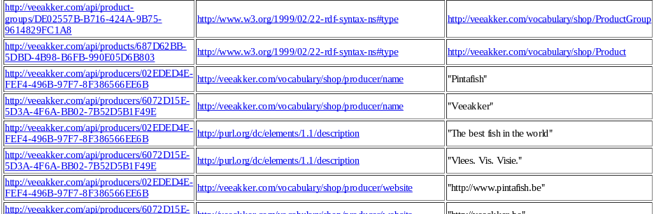

mu.semte.ch
An Ecosystem of User-facing Microservices
supported by Semantic Technologies
Tenforce
| Erika Pauwels | Aad Versteden |
| @erikapauwels | @impulsator |
| github.com/erikap | github.com/madnificent |
| erika.pauwels@tenforce.com | aad.versteden@tenforce.com |
Program Manager: Agis Papantoniou
Teaser
Setup
git clone git@github.com:my-project
cd my-project
docker-compose up
Looks like

Content store

In 30 seconds
- Tiny pieces of software
- Easy to share
- Well-known standards
- User facing
- Triple store
- Single page app
+ tooling
In 60 seconds

Why?
Why?
- Technology-agnostic
- Code sharing
- Flexible model
- Data synchronization
... and for TenForce?
- Sales: baby steps into semtech
- No need to publish content yet
- Quick proof of concept
- Structured reuse
In depth
Identifier
Adds MU-SESSION-ID header
Dispatcher
Connect the microservices
dispatcher:
image: semtech/mu-dispatcher
links:
- registration:registration
- login:login
- comments:comments
- resource:resource
volumes:
- config:/config
Dispatcher
Select right microservice
match "/producers" do
Proxy.forward conn, path, "http://resource/producers/"
end
match "/accounts/*path" do
Proxy.forward conn, path, "http://registration/accounts/"
end
Resource service
(define-resource product-group ()
:on-path "product-groups"
:class (s-url "http://veeakker.com/vocabulary/shop/ProductGroup")
:resource-base (s-prefix "http://veeakker.com/api/product-groups/")
:properties `((:name :string ,(s-prefix "vshop:productGroupName"))))
:has-many `((product
:via ,(s-prefix "v-shop:hasProduct")
:as "products")))
(define-resource product-group ()
:on-path "product-groups"
:class (s-url "http://veeakker.com/vocabulary/shop/ProductGroup")
:resource-base (s-prefix "http://veeakker.com/api/product-groups/")
:properties `((:name :string ,(s-prefix "vshop:productGroupName"))))
:has-many `((product
:via ,(s-prefix "v-shop:hasProduct")
:as "products")))
define-resource product-group
:on-path "product-groups"
:class "http://veeakker.com/vocabulary/shop/ProductGroup"
:resource-base "http://veeakker.com/api/product-groups/"
:properties :name :string "vshop:productGroupName"
:has-many product
:via "v-shop:hasProduct"
:as "products"
More depth
Microservice templates
- Basic starting point for a new microservice
- Follows best practices
- We're eager to include new languages
{ JSON-API }
- Community standard JSON format
- 1.0 release two days ago
- ... much in flux before that
Docker
- Easy deployment of services
- Near-future easy orchestration
- Big-name corporate backing
Future vision on web apps
- Standardized web-components
- More frontend code sharing
- More mashed web apps
Benefits
- Simple code sharing
- Small scoped problems
- Mock-style SPA development
- Built for the future
Future work
- Clean deployment with Docker
- Analysing query logs
- Versioned triple store
- Linked Data Fragments support
Need more?
mu.semte.ch
is coming
... or try one of erika.pauwels@tenforce.com aad.versteden@tenforce.com @impulsater @tenforce